|
Wendi Chen | 陈文迪 I'm a computer science Ph.D. student at Shanghai Jiao Tong University (SJTU) and Shanghai Innovation Institute (SII). I'm a member of Machine Vision and Intelligence Group (MVIG) supervised by Prof. Cewu Lu (卢策吾). I also work closely with Prof. Chuan Wen on my research. Before that, I received my B.E. degree of Computer Science at SJTU. My research interests focus on Embodied AI and Robotics. Specifically, I am interested in how to extend robotic manipulation to a wider range of tasks, such as those involving deformable objects, contact-rich interactions, and dexterous tasks, by improving hardware, data, and algorithms. I'm building general physical intelligence at Noematrix Lab. I'm always open to exchanging ideas with people from diverse backgrounds. Whether you're interested in joining us, discussing research, or just having a chat, feel free to reach out via Email or WeChat. Email / WeChat (微信) / Twitter (X) / Google Scholar / Github |

|
{kind=link}
News
|
ProjectsRepresentative projects are highlighted. |

 |
RoboRSI: Stable, Efficient, and Reusable Robot Self-Evolution in Complex Real-World Environments
Noematrix Team Research Blog, 2026 blog / code / bibtex RoboRSI uses a multi-agent framework to coordinate routine planning, execution, and diagnosis, reducing human oversight to high-level guidance and safety supervision. Top-down Skill Refinement (TSR) fixes the task structure and localizes failure repair, keeping repeated code revisions aligned with the overall goal. For real-world floor cleanup, it developed reusable mobile-manipulation skills in about one day. A comparable earlier demo took two engineers roughly a month. In simulation, automated resets and parallel iteration reached 95/120 LIBERO tasks and 36/50 RoboTwin tasks (vs. 9/50 for an engineer-only baseline). |


|
Noe-0 Research Preview: Breaking Through the Dexterity Bottleneck with End-to-End Non-Embodied Data
Noematrix Team (Wendi Chen as Project Lead) Research Blog, 2026 blog / bibtex Noe-0 is a full-stack effort in embodied foundation model pre-training, co-designing data, models, and infrastructure. Using non-embodied data throughout pre-training and post-training preserves natural motion to overcome the dexterity bottleneck. Joint action learning with pixel-space implicit world modeling improves transfer across embodiments, objects, and scenes. A traceable data pipeline and Data Agent connect collection, curation, and model feedback to accelerate dataset iteration. |
PublicationsRepresentative papers are highlighted. |
|
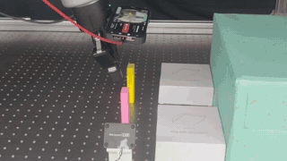 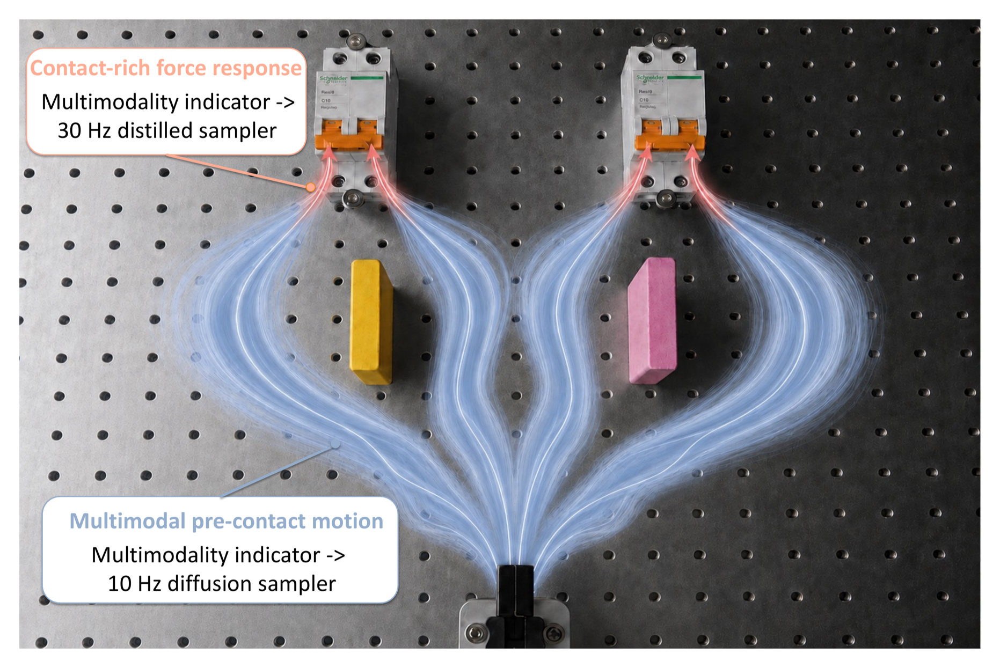 |
FA-RDP: A Frequency-Adaptive Reactive Diffusion Policy for Contact-Rich Manipulation
Lifeng Zhuo*, Wendi Chen*, Han Xue, Shirun Tang, Jun Lv, Cewu Lu\( \dagger \), Chuan Wen\( \dagger \) (*equal contributions, \( \dagger \)corresponding authors) arXiv preprint, 2026 project page / paper / arXiv / bibtex FA-RDP adapts its action frequency to the stage of contact-rich manipulation: it preserves multimodal, low-frequency approaches before contact and switches to fast, one-step force-reactive control after contact. A learned multimodality indicator selects between the samplers, while Manifold Consistency Distillation enables accurate one-step actions on the robot action manifold. |
|
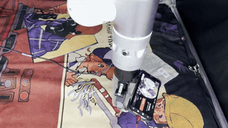 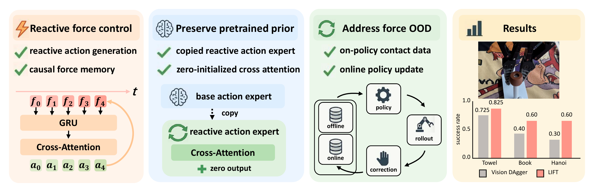 |
Never Too Late for Force: Accelerating VLA Post-Training with Reactive Force Injection
Yi Wang*, Wendi Chen*\( \dagger \), Zimo Wen*, Han Xue, Xueqi Li, Wenye Yu, Zhijie Chen, Hao Yang, Jun Lv, Chuan Wen\( \ddagger \), Cewu Lu\( \ddagger \) (*equal contributions, \( \dagger \)project lead, \( \ddagger \)corresponding authors) Conference on Robot Learning (CoRL), 2026 project page / paper / arXiv / bibtex LIFT adds force through prior-preserving reactive force injection, grafting a reactive action expert onto a pretrained VLA. It encodes recent 6D end-effector force as causal memory and refreshes actions within each execution chunk. Combined with online DAgger corrections, LIFT learns faster and achieves stronger contact-rich performance than vision-only post-training. |
|
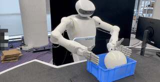 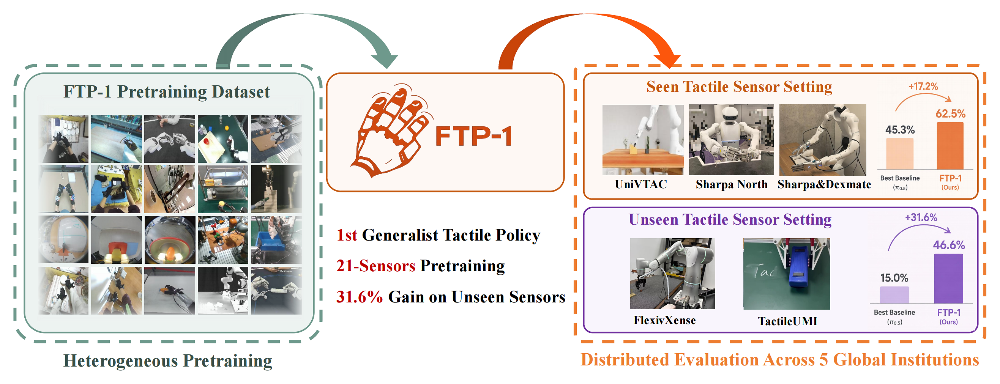 |
FTP-1: A Generalist Foundation Tactile Policy Across Tactile Sensors for Contact-Rich Manipulation
Chengbo Yuan*, Zicheng Zhang*, Mingjie Zhou*, Wendi Chen, Yi Wang, Zhuoyang Liu, Dantong Niu, Shuo Wang, Hui Zhang, Wenkang Zhang, Yingdong Hu, Yuanqing Gong, Wanli Xing, Chuan Wen, Cewu Lu, Kaifeng Zhang, Yang Gao (*equal contributions) Conference on Robot Learning (CoRL), 2026 project page / paper / arXiv / bibtex FTP-1 is a generalist foundation tactile policy pretrained on large-scale heterogeneous tactile manipulation data across diverse sensors and embodiments. By unifying image-, array-, and state-based tactile inputs into a morphology-aware tactile token space, FTP-1 enables transferable tactile skills and improves contact-rich manipulation on both seen and unseen tactile sensor setups. |
|
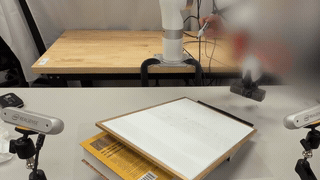 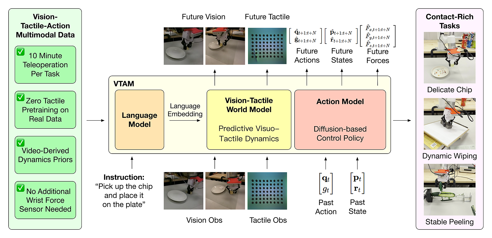 |
VTAM: Video-Tactile-Action Models for Complex Physical Interaction Beyond VLAs
Haoran Yuan*, Weigang Yi*, Zhenyu Zhang*, Wendi Chen*, Yuchen Mo, Jiashi Yin, Xinzhuo Li, Xiangyu Zeng, Chuan Wen, Cewu Lu, Katherine Driggs-Campbell, Ismini Lourentzou (*equal contributions) arXiv preprint, 2026 project page / paper / arXiv / code / bibtex VTAM extends video action models with tactile perception for contact-rich manipulation. By introducing lightweight modality transfer finetuning and tactile regularization, it enables more robust multimodal fusion and substantially improves performance in complex physical interactions beyond vision-only policies. |


|
RoboPocket: Improve Robot Policies Instantly with Your Phone
Junjie Fang*, Wendi Chen*, Han Xue*\( \dagger \), Fangyuan Zhou*, Tian Le, Yi Wang, Yuting Zhang, Jun Lv, Chuan Wen\( \ddagger \), Cewu Lu\( \ddagger \) (*equal contributions, \( \dagger \)project lead, \( \ddagger \)corresponding authors) Conference on Robot Learning (CoRL), 2026 project page / paper / arXiv / tweet / bibtex We introduce RoboPocket, a system that enables Robot-Free Instant Policy Iteration using consumer smartphones. By visualizing the policy's predicted trajectory via AR Visual Foresight, users can proactively identify potential failures and focus data collection on the policy's weak regions without requiring a physical robot. Furthermore, an asynchronous online finetuning pipeline continuously updates the policy with incoming data, effectively closing the learning loop in minutes. |


|
ImplicitRDP: An End-to-End Visual-Force Diffusion Policy with Structural Slow-Fast Learning
Wendi Chen, Han Xue, Yi Wang, Fangyuan Zhou, Jun Lv, Yang Jin, Shirun Tang, Chuan Wen\( \dagger \), Cewu Lu\( \dagger \) (\( \dagger \)corresponding authors) Robotics and Automation Letters (RA-L), 2026 Also to be presented at International Conference on Robotics and Automation (ICRA), 2027. 🔥Outstanding Paper Award @ SoS Workshop in CVPR 2026 project page / paper / arXiv / code / bibtex ImplicitRDP is a unified end-to-end visual-force diffusion policy that integrates visual planning and reactive force control. By leveraging Structural Slow-Fast Learning, it performs closed-loop adjustments at high frequency while maintaining temporal coherence. Additionally, Virtual-target-based Representation Regularization prevents modality collapse, enabling adaptive attention to visual and force modalities. |
|
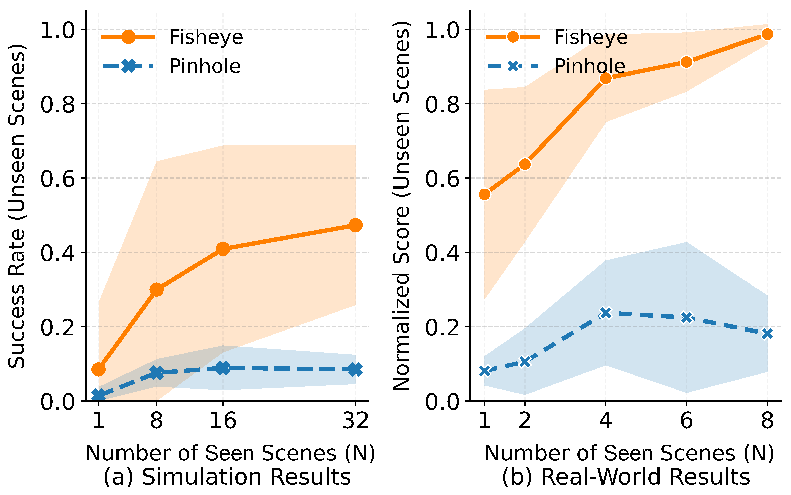 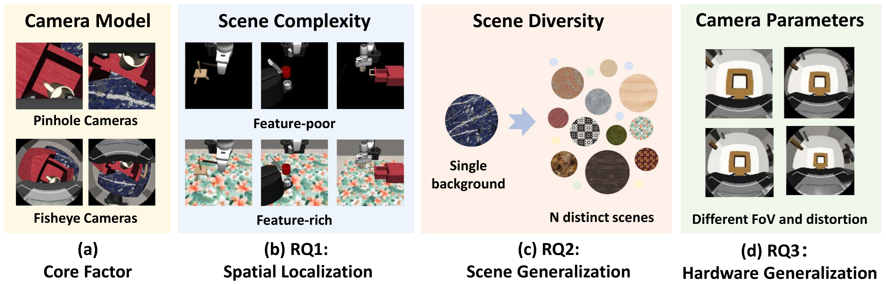 |
Rethinking Camera Choice: An Empirical Study on Fisheye Camera Properties in Robotic Manipulation
Han Xue*, Nan Min*, Xiaotong Liu*, Wendi Chen, Yuan Fang, Jun Lv, Cewu Lu\( \dagger \), Chuan Wen\( \dagger \) (*equal contributions, \( \dagger \)corresponding authors) Conference on Computer Vision and Pattern Recognition (CVPR), 2026 project page / paper / arXiv / bibtex This paper presents the first comprehensive empirical study on the properties of wrist-mounted fisheye cameras in robotic imitation learning. Simulation and real-world results reveal that the fisheye camera can improve spatial localization in visually complex environments and scene generalization when trained with diverse data. We also propose a Random Scale Augmentation (RSA) strategy to mitigate the cross-camera transfer challenges of fisheye cameras. |


|
SOE: Sample-Efficient Robot Policy Self-Improvement via On-Manifold Exploration
Yang Jin, Jun Lv, Han Xue, Wendi Chen, Chuan Wen\( \dagger \), Cewu Lu\( \dagger \) (\( \dagger \)corresponding authors) International Conference on Robotics and Automation (ICRA), 2026 project page / paper / arXiv / bibtex We propose a plug-and-play module that enables constrained exploration on the manifold of valid actions for robotic policies. In this way, our model can generate diverse and consistent actions, supporting sample-efficient policy self-improvement. |


|
Right-Side-Out: Learning Zero-Shot Sim-to-Real Garment Reversal
Chang Yu*, Siyu Ma*, Wenxin Du, Zeshun Zong, Han Xue, Wendi Chen, Cewu Lu, Yin Yang, Xuchen Han, Joseph Masterjohn, Alejandro Castro, Chenfanfu Jiang (*equal contributions) International Conference on Robotics and Automation (ICRA), 2026 project page / paper / arXiv / bibtex Right-Side-Out is a zero-shot sim-to-real framework that turns garments right-side out by decomposing the task into keypoint-parameterized primitives and scaling training via high-fidelity GPU-parallel MPM simulation. |


|
Reactive Diffusion Policy: Slow-Fast Visual-Tactile Policy Learning for Contact-Rich Manipulation
Han Xue*, Jieji Ren*, Wendi Chen*, Gu Zhang\( \dagger \), Yuan Fang\( \dagger \), Guoying Gu, Huazhe Xu\( \ddagger \), Cewu Lu\( \ddagger \) (*equal contributions, \( \dagger \)equal contributions, \( \ddagger \)equal advising) Robotics: Science and Systems (RSS), 2025 🔥Best Student Paper Finalist 🔥Best Paper @ Beyond P&P Workshop in ICRA 2025 project page / paper / arXiv / tweet / code / bibtex We propose TactAR and Reactive Diffusion Policy (RDP). TactAR is a teleopration system that uses AR to provide tactile / force feedback. RDP is a slow-fast policy learning method which enables closed-loop tactile / force control via fast policy while maintaining the capability of modeling complex action distributions via slow policy. |


|
DeformPAM: Data-Efficient Learning for Long-horizon Deformable Object Manipulation via Preference-based Action Alignment
Wendi Chen*, Han Xue*, Fangyuan Zhou, Yuan Fang, Cewu Lu (*equal contributions) International Conference on Robotics and Automation (ICRA), 2025 🔥Best Paper Finalist @ RMDO Workshop in ICRA 2025 project page / paper / arXiv / tweet / code / video / bibtex Inspired by RLHF, DeformPAM enhances learning efficiency and mitigates distribution shift in deformable object manipulation by selecting action through a preference-based implicit reward model. |
Selected Awards and Honors
|
|
The website template is from Jon Barron. |